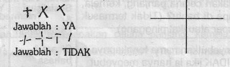

Kuesioner Praskrining untuk Anak 66 bulan
- Jangan membantu anak dan jangan memberitahu nama gambar ini, suruh anak menggambar seperti contoh ini di kertas kosong yang tersedia. Berikan 3 kali kesempatan. Apakah anak dapat menggambar seperti contoh ini?
- Ikuti perintah ini dengan seksama. Jangan memberi isyarat dengan telunjuk atau mats pads saat memberikan perintah berikut ini: "Letakkan kertas ini di atas lantai". "Letakkan kertas ini di bawah kursi". "Letakkan kertas ini di depan kamu" "Letakkan kertas ini di belakang kamu" Jawab YA hanya jika anak mengerti arti "di atas", "di bawah", "di depan" dan "di belakang”
- 3. Apakah anak bereaksi dengan tenang dan tidak rewel (tanpa menangis atau menggelayut pada anda) pada saat anda meninqgalkannya?
- Jangan menunjuk, membantu atau membetulkan, katakan pada anak :
- Suruh anak melompat dengan satu kaki beberapa kali tanpa berpegangan (lompatan dengan dua kaki tidak ikut dinilai). Apakah ia dapat melompat 2-3 kali dengan satu kaki?
- Dapatkah anak sepenuhnya berpakaian sendiri tanpa bantuan?
- Suruh anak menggambar di tempat kosong yang tersedia. Katakan padanya: "Buatlah gambar orang". Jangan memberi perintah lebih dari itu. Jangan bertanya/ mengingatkan anak bila ada bagian yang belum tergambar. Dalam memberi nilai, hitunglah berapa bagian tubuh yang tergambar. Untuk bagian tubuh yang berpasangan seperti mata, telinga, lengan dan kaki, setiap pasang dinilai satu bagian. Dapatkah anak menggambar sedikitnya 3 bagian tubuh?
- Pada gambar orang yang dibuat pada nomor 7, dapatkah anak menggambar sedikitnya 6 bagian tubuh?
- Tulis apa yang dikatakan anak pada kalimat-kalimat yang belum selesai ini, jangan membantu kecuali mengulang pertanyaan: "Jika kuda besar maka tikus ……… "Jika api panas maka es ……… "Jika ibu seorang wanita maka ayah seorang ……… Apakah anak menjawab dengan benar (tikus kecil, es dingin, ayah seorang pria) ?
- Apakah anak dapat menangkap bola kecil sebesar bola tenis/bola kasti hanya dengan menggunakan kedua tangannya? (Bola besar tidak ikut dinilai).


"Tunjukkan segi empat merah" "Tunjukkan segi empat kuning" ‘Tunjukkan segi empat biru” "Tunjukkan segi empat hijau" Dapatkah anak menunjuk keempat warna itu dengan benar?